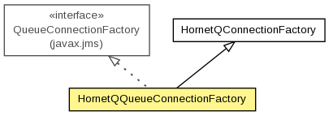

org.hornetq.jms.client
Class HornetQQueueConnectionFactory
java.lang.Object
 org.hornetq.jms.client.HornetQConnectionFactory
org.hornetq.jms.client.HornetQQueueConnectionFactory
org.hornetq.jms.client.HornetQConnectionFactory
org.hornetq.jms.client.HornetQQueueConnectionFactory
- All Implemented Interfaces:
- Serializable, javax.jms.ConnectionFactory, javax.jms.QueueConnectionFactory, Referenceable
public class HornetQQueueConnectionFactory
- extends HornetQConnectionFactory
- implements javax.jms.QueueConnectionFactory

A class that represents a QueueConnectionFactory.
- Author:
- Howard Gao
- See Also:
- Serialized Form
| Methods inherited from class org.hornetq.jms.client.HornetQConnectionFactory |
close, createConnection, createConnection, createConnectionInternal, createQueueConnection, createQueueConnection, createTopicConnection, createTopicConnection, createXAConnection, createXAConnection, createXAQueueConnection, createXAQueueConnection, createXATopicConnection, createXATopicConnection, finalize, getCallFailoverTimeout, getCallTimeout, getClientFailureCheckPeriod, getClientID, getConfirmationWindowSize, getConnectionLoadBalancingPolicyClassName, getConnectionTTL, getConsumerMaxRate, getConsumerWindowSize, getDiscoveryGroupConfiguration, getDupsOKBatchSize, getGroupID, getInitialConnectAttempts, getInitialMessagePacketSize, getMaxRetryInterval, getMinLargeMessageSize, getProducerMaxRate, getProducerWindowSize, getReconnectAttempts, getReference, getRetryInterval, getRetryIntervalMultiplier, getScheduledThreadPoolMaxSize, getServerLocator, getStaticConnectors, getThreadPoolMaxSize, getTransactionBatchSize, isAutoGroup, isBlockOnAcknowledge, isBlockOnDurableSend, isBlockOnNonDurableSend, isCacheLargeMessagesClient, isCompressLargeMessage, isFailoverOnInitialConnection, isHA, isPreAcknowledge, isUseGlobalPools, setAutoGroup, setBlockOnAcknowledge, setBlockOnDurableSend, setBlockOnNonDurableSend, setCacheLargeMessagesClient, setCallFailoverTimeout, setCallTimeout, setClientFailureCheckPeriod, setClientID, setCompressLargeMessage, setConfirmationWindowSize, setConnectionLoadBalancingPolicyClassName, setConnectionTTL, setConsumerMaxRate, setConsumerWindowSize, setDupsOKBatchSize, setFailoverOnInitialConnection, setGroupID, setInitialConnectAttempts, setInitialMessagePacketSize, setMaxRetryInterval, setMinLargeMessageSize, setPreAcknowledge, setProducerMaxRate, setProducerWindowSize, setReconnectAttempts, setRetryInterval, setRetryIntervalMultiplier, setScheduledThreadPoolMaxSize, setThreadPoolMaxSize, setTransactionBatchSize, setUseGlobalPools, toString |
| Methods inherited from interface javax.jms.QueueConnectionFactory |
createQueueConnection, createQueueConnection |
| Methods inherited from interface javax.jms.ConnectionFactory |
createConnection, createConnection |
HornetQQueueConnectionFactory
public HornetQQueueConnectionFactory()
HornetQQueueConnectionFactory
public HornetQQueueConnectionFactory(ServerLocator serverLocator)
- Parameters:
serverLocator -
HornetQQueueConnectionFactory
public HornetQQueueConnectionFactory(boolean ha,
DiscoveryGroupConfiguration groupConfiguration)
- Parameters:
ha - discoveryAddress - discoveryPort -
HornetQQueueConnectionFactory
public HornetQQueueConnectionFactory(boolean ha,
TransportConfiguration... initialConnectors)
- Parameters:
ha - initialConnectors -
getFactoryType
public int getFactoryType()
- Overrides:
getFactoryType in class HornetQConnectionFactory
Copyright © 2013 JBoss, a division of Red Hat. All Rights Reserved.